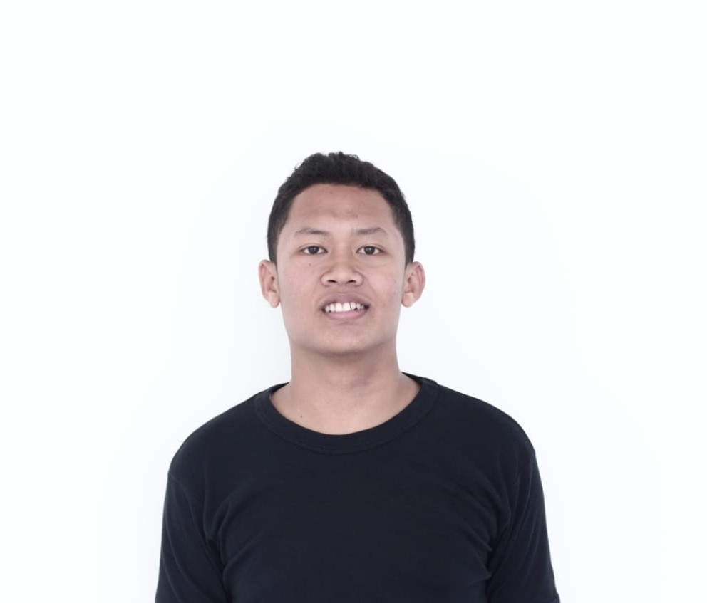

Halo!
Aku adalah seorang pembelajar. Di dalam segala bentuk kondisi, aku selalu belajar dan belajar. Belajar menurutku merupakan sebuah hal yang sangat menyenangkan. Dengan belajar aku mendapatkan banyak pembelajaran, banyak pemahaman, dan dari belajar aku menemukan teman-teman yang hebat.